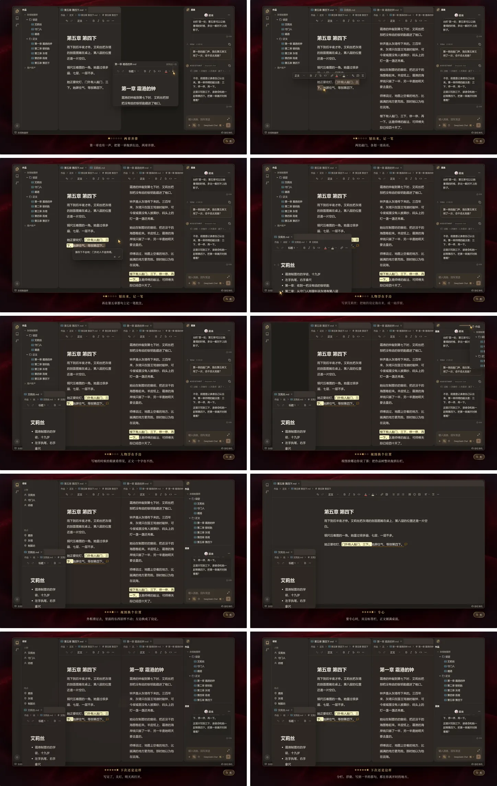
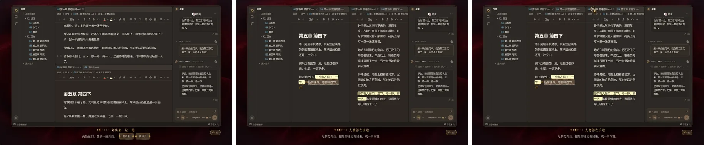
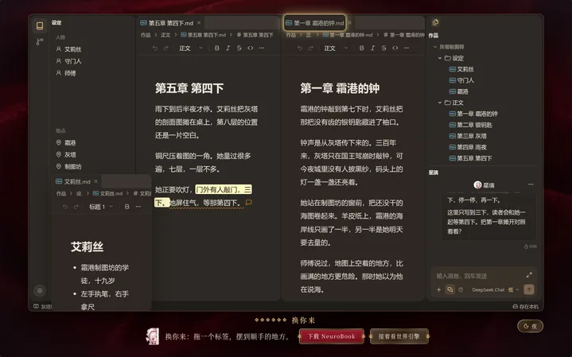
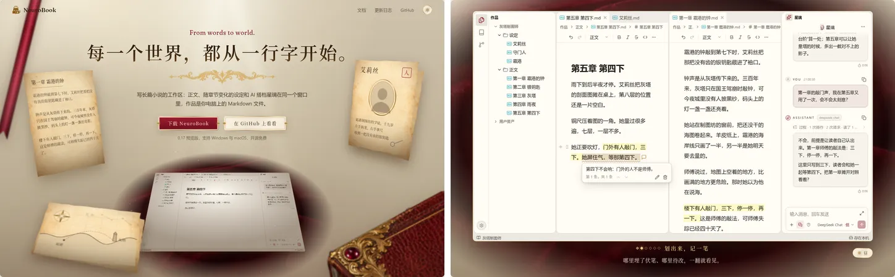

产品介绍首页：入殿·俯案成界（第 6 轮）
照第 5 轮会话里的意见改：第一幕的演示不再跟着滚动逐帧走，改成“滚动只决定停在哪一拍”，拖动都是产品真的手势与实时布局，访客动过以后会摆回去；加了一拍介绍编辑器的高亮与批注；整页有了白天；首屏的三张纸轮流动起来；按钮出了四版。
第一幕的演示这样做稳了吗？其余几幕照着做吗？
推荐照着做：滚动只决定停在哪一拍，演示只是两拍之间的装饰，滚得快、往回滚、半路被打断都落在一个记下的样子上，不会停在半截；拖动是真的实时布局，和访客自己拖一模一样。
你问的做法：滚动只决定状态，动画只负责装饰
- 每一拍有一个终态（布局、标签、正文、对话），演完或摆好就记下来。滚动只给“停在第几拍”，停稳约 0.2 秒才算数，快速滚过的拍不演。
- 往前一拍就演；往回滚直接摆回那一拍的终态，不重演；一下跳过几拍时先快速摆好前面几拍，再演停住的那一拍。
- 同一时间只有一段在走：换目标先打断正在演的，撤下没松开的拖动、指针与光圈，再按新目标走。
- 访客动过工作台：演示让开，字幕后面出现“接着看”“摆回去”；不按也行，下一次换拍先摆回再接着演。能就地摆就走产品的布局动画，从访客摆的样子走回去；正文对不上（打过字、演到一半）时压一层薄暮，按记下的重新挂一台再揭开。

- 两章并排：第五章打出那半句，作者问、星璃边打边答；第一章的标签沿标签条拖到右端、再落进右缘，布局一路排开，松手两章并排。
- 划出来，记一笔（新加）：拖选两处敲门，点编辑器选区菜单上的高亮；再选第五章那半句，点“批注”，在卡片里写“第四下不会响：门外的人不是师傅。”，保存后点批注的小符号把卡片打开。
- 人物浮在手边：艾莉丝的标签拖到状态栏上松手，浮出一扇窗；拉右上角的手柄，收到作品树下面。
- 视图换个位置：作品的入口拖到右栏，作品树整块搬过去（和星璃上下两段），左边换成设定。
- 专心：真的双击标签栏，正文铺满；再双击还原。
- 下次还是这样：关灯，存盘并重新挂一台，再开灯：分栏、浮窗、高亮与批注、打到一半的那句、对话都在。
访客动手以后

左：第二拍演到一半访客点了正文、又把第一章拖成上下两栏，演示让开。中：滚到下一拍，工作台走回上一拍记下的样子。右：补上第二拍的高亮与批注，接着演第三拍。

顺带发现一个产品本身的问题：高亮的颜色是写进 Markdown 的浅色（色板在 markdown 插件的 palette.ts），夜间配色下字跟着正文用浅色，涂上就看不清。首页先在自己这台工作台里把高亮里的字压成深墨；产品里要不要改、怎么改（字换深色，或夜里把高亮调暗）另说。
白天这样成立吗？
推荐可以：夜是暗夜圣殿，昼是午后的抄经室：偏暖的灰石墙（比羊皮纸暗半阶，纸不会糊在底上）、左上高窗斜进来一道日光、深墨的字；工作台跟着换产品的日间配色。缺省仍是夜。

左：白天的首屏。右：白天的第一幕（字幕在丝绒上，昼夜都用浅色的字）。昼夜开关在导航最右端，落地以后在字幕那一条的右端，是同一个开关。
首屏的纸这样“静中有动”可以吗？
推荐可以：不翻牌（@designer 说翻牌加扫光像抽卡），改成纸上的东西自己演进、叠着的纸换上来；约每 6.5 秒轮到一张，一次只动一张，镜头推走或页面在后台时不动，访客要求少动效时不动。
- 手稿：敲门那一行涂上一道高亮，红笔圈出来、牵一条线写“伏笔：第五章再响”，下一轮再淡掉（和第一幕“划出来，记一笔”是同一件事）。
- 人物卡下面压着星璃的便笺（她的头像与一句提醒），轮到时便笺斜着抽出来换到上面。
- 地图下面压着剧情的时间线（四章四件事，两声敲门连着红线），换法同上。
按钮用哪一版？
推荐 B 皮面烫金：和首屏那本书的皮面、鎏金包角是一套，主次分得最开（次按钮只留细金框与四角，白天不压人、夜里不沉底）。想最稳就选 A，它是第 5 轮那一版的精修。

- 悬停不扫光，只有受光的微变：赤红微微提温、金线亮半档、内框或菱形往外展一两像素、一圈淡暖晕；按下时下沉 1px。键盘聚焦有一道金色的焦点环。
- D 封蜡 @designer 建议降级当彩蛋：火漆印让重心偏左，白天的签条容易融进石墙。
已定
- 首页给搜索进来的人，做得像产品介绍；书庭这类页面另做、自由发挥（2026-11-26）
- 截图尽量少：直接把工作台复原，让人体验到拖动、分屏与布局动画的丝滑（第 1 轮）
- 第一屏把介绍说明白，同时要有高级精美的动画，让人想往下滚；往下滚进入滚动动画（第 1 轮）
- 基调取 w00050 t06 契约仪式页的史诗、神圣、西幻气氛，不复制；现有的 NovelAI 场景图不直接用（2026-11-26）
- 要讲的功能：写作与编辑器、世界引擎、剧情（在做）、星璃与 Agent、本地与开源、插件与 SDK、桌面版、模型自选；llmlint 不列（2026-11-26）
- 先做方向一《入殿·俯案成界》；材质可以用生成的贴图，首页可以用星璃的立绘与贴纸（2026-11-26）
- 首屏方向不变、先打磨材质；按钮加金边一类的装饰，往皇室奢华感走；工作台缺省夜间配色、可以切换（第 4 轮）
- 第一幕放慢讲清楚，加回浮窗、视图换位置、关掉再打开，和首屏一样华丽（第 4 轮与会话）
- 首句用 e3“每一个世界，都从一行字开始。”，配 From words to world.（第 4 轮与会话）
- 演示的拖动用实时布局；访客动过要有恢复动画；顺手介绍编辑器的标注与高亮；整个页面要有白天；首屏静中有动、纸条可以轮播；按钮出几版（第 5 轮之后的会话）